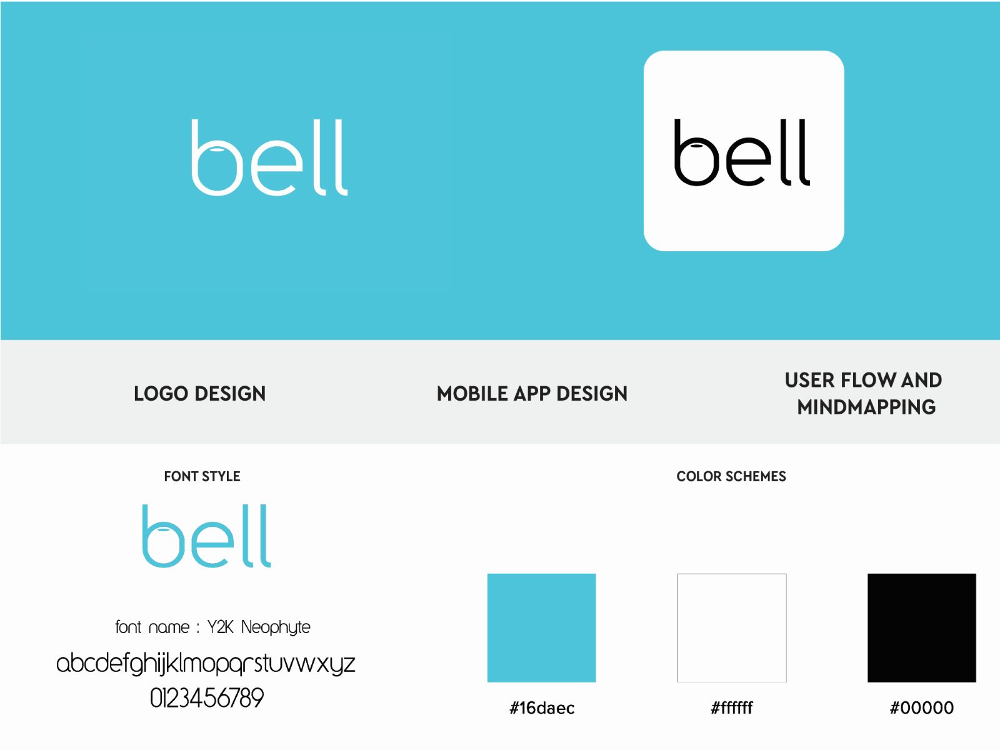
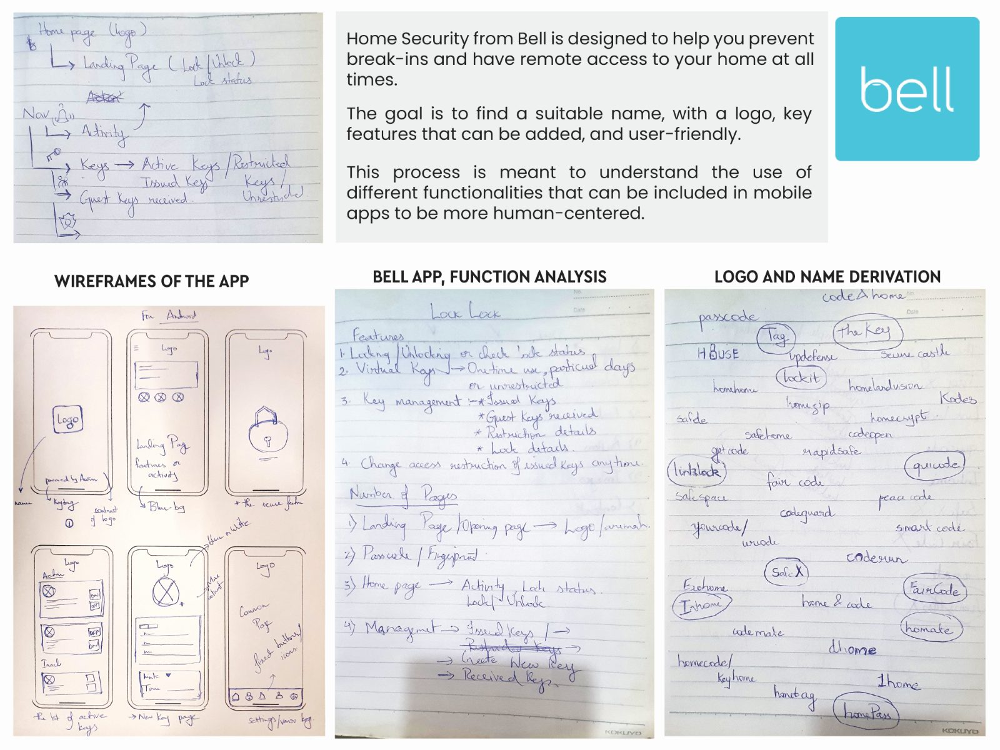

Bell
Home Security
Home security from Bell is designed to help you prevent break-ins and have remote access to your home at all times. The goal was to find a suitable name, with a logo, key features that could be added, and a user-friendly interface.
A self-directed enquiry, framed as a question rather than a brief.
This project was set up explicitly as an investigation: to understand the use of different functionalities that can be included in mobile apps to be more human-centred. The output was a name, an identity and an app interface for a home security concept.
Because it is self-directed, there is no client constraint here — which makes the reasoning the only thing holding it up.
Home security sells fear, and fear makes bad interfaces.
The category’s conventions are alarms, sirens, shields and padlocks: an identity of threat. That framing pushes every interface decision toward the same thing — arming, locking, alerting — and treats the people who live in the home as a security perimeter to be managed.
But most of what actually happens at a front door is hospitable. People let other people in: a cleaner, a relative, a delivery, a friend arriving before you get home.
Work out the functions first, and let the mark fall out of that.
The process runs backwards from most identity work. Function analysis and name derivation are worked through on paper before any mark exists, and the name lands on a single domestic object everyone already associates with the front door — a bell. Something you let people ring.
The core idea follows: access you can grant and revoke, not just an alarm you can arm. The cost of that framing is that it walks away from the category’s most reliable sales lever. Fear converts. Hospitality has to be designed well enough to be worth choosing.
An identity that could afford to be quiet.
Because the concept carries the personality, the identity does not have to. The wordmark is set in Y2K Neophyte, lowercase, with no icon. The palette is one cyan against white and black, and nothing else.
The interface set covers the home screen, settings, users added for a key, the activity record, the side navigation, a pop-up alert style, the new-key page and key sharing — which is where the concept earns its name.
Three spreads, front to back.



The interface set covers the home screen, settings, users added for a key, the activity record, the side navigation, a pop-up alert style, the new-key page and key sharing — which is where the concept earns its name. A bell is something you let people ring.
What shaped the work as much as the brief did.
No users. Self-directed means the function analysis rests on reasoning and desk research, not on interviews. That is the honest limit of this project and the first thing I would fix.
No engineering counterpart. Nothing here was pressure-tested against what a real security integration would permit — revocable access is a considerably harder problem in hardware than in Figma.
Three spreads. The documentation is deliberately compact, which suits the concept but leaves the wireframe stage thinner than the interface stage.
A concept with a defensible argument and no evidence.
What exists is a name derived from analysis rather than brainstorm, an identity subordinated to the interface, and a UI set built around sharing rather than locking. That is a complete piece of thinking.
What does not exist is validation. No usability testing, no participants, no metrics — and for a concept whose whole claim is that it is more human-centred, that gap is worth stating plainly rather than dressing up.
What I would do differently.
I would test the key-sharing flow with five people who actually share access to their homes. It is the one idea the project stands on, and it has never met a user.
I would also design the failure states. Granting access is the pleasant half; revoking it, disputing it, or discovering someone used a key when they should not have, is where a security product is really judged.